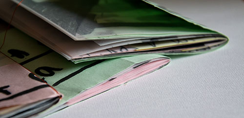
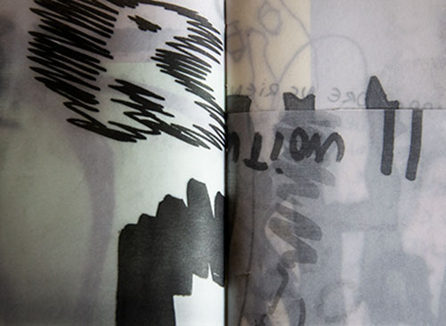
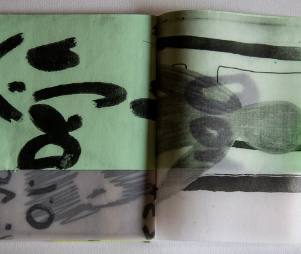

Projet : Production d’une pièce graphique autour d’une notion : dirty. Elle ce définit sous trois aspects : saleté atteignant les sens, saleté matériel, physique et saleté psychique.


Description : Deux séries de carnets traitant de l’auto-censure. Dessins et textes exprimants la pudeur, et la crainte du jugement d’autrui. La première série est gardée secrète, afin de conserver l’auto-censure. Deuxième série faite à partir de changements d’échelles de la première. L’impression est faite sur un format A6, à partir de papiers calque et coloré (type papier brouillons d’examen). Les différentes échelles renforcent l’intimité, le calque lui fait gage de transparence. Cependant ces deux caractéristiques nous éloigne tant qu’elles nous rapproche du message. L’accumulation des masses dû à la transparence du papier calque, rendent le message illisible, il y a donc toujours une forme de censure.
 Objectif : Rendre compte de l’auto-censure à travers : la pratique fébrile, maladroite du dessin ; la difficulté à faire des choix et l’autocensure dans le métier de graphiste qui peut subir une frustration créative.
